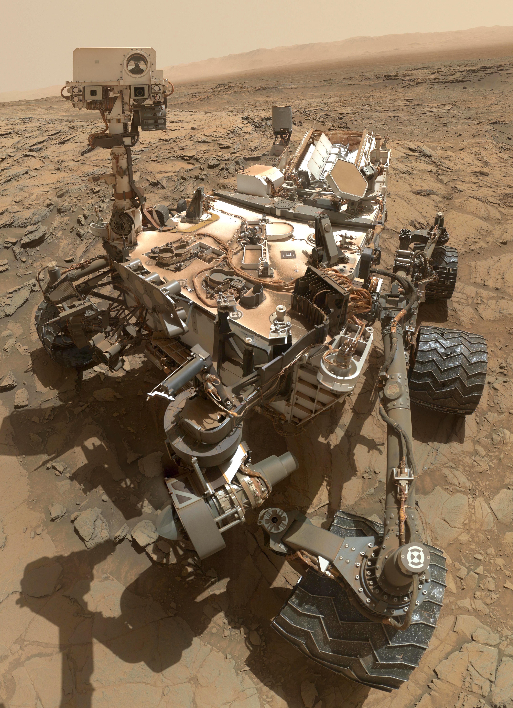

In the world of robotics, there are different types of robots that serve specific purposes:
Industrial Robots

Industrial robots are extensively used in manufacturing processes to automate tasks such as welding, assembly, packaging, and more. Their presence enhances productivity, efficiency, and ensures improved quality control.
Medical Robots
Within the medical field, robots are employed for surgical operations, diagnostics, and therapy. Some medical robots possess the ability to perform intricate and precise procedures, surpassing the capabilities of human surgeons.
Home Robots
Designed to assist with domestic chores, home robots have gained popularity in recent years. They are capable of performing tasks like cleaning floors, mowing lawns, and automated vacuuming, simplifying our lives and freeing up time for other activities.
Mobile Robots
Mobile robots are engineered to navigate and operate in various environments. They are often used for exploration purposes in remote and hazardous locations such as space, underwater depths, or areas with high radiation, where human presence may be impractical or unsafe.
Educational Robots
In educational settings, robots are utilized to encourage interest in science, programming, and engineering among children. These educational robots provide interactive and hands-on learning experiences, fostering creativity, problem-solving, and critical thinking skills.